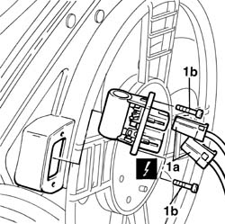

1088E20 resistor for radiator cooling fan - r + r
- Path
- Procedures > 10 ENGINE > 1088 ENGINE COOLING > 1088E COOLANT TEMPERATURE CONTROL DEVICES > 1088E20 resistor for radiator cooling fan - r + r
- Kind
- repair procedure (removal / refitting; the operation number is the code)
- Applies to
- engines: 1.2 8v, 1.4 8v, 1.9 DIESEL; all production periods
- Interactive page
- https://sloeber94.github.io/elrnDB-fDbl/en/#/2584317
Applies to: engines: 1.2 8v, 1.4 8v; all production periods
 Removing
Removing
 Refitting
RefittingDisconnect the battery negative terminal.
1. Disconnect electrical connections (1a) and undo securing bolts (1b)
 | Name | Connector |
|---|---|---|
1a | Engine fan adjustment resistor |
Remove electric fan resistor.

Applies to: engines: 1.2 8v, 1.4 8v; all production periods
Refitting
RemovingFit the electric fan resistor and secure it with retaining bolts.
Connect the resistor electrical connections.
| Name | Connector |
|---|---|---|
- | Engine fan adjustment resistor |
Connect the battery negative terminal.
Applies to: engines: 1.9 DIESEL; all production periods
Removing
RefittingDisconnect the battery negative terminal.
1. Disconnect electrical connections (1a) and undo securing bolts (1b)
| Name | Connector |
|---|---|---|
1a | Engine fan adjustment resistor |
Remove electric fan resistor
Applies to: engines: 1.9 DIESEL; all production periods
Refitting
RemovingFit the electric fan resistor and secure it with retaining bolts
Connect the resistor electrical connections
| Name | Connector |
|---|---|---|
- | Engine fan adjustment resistor |
Connect the battery negative terminal.